class: center, middle # Daniel Lin's Portfolio --- ###### Summary of Experience ### Front End Project: (70% Front-End, 20% Back-End, 10% Data-Engineer) #### Work - Website as product for gambling and entertainment (JS+CSS) - eCommence website for music technology company (JS+SASS) - SPA Price Dashboard (React+Redux+SASS) #### Freelancer: - Refractored SPA Price Dashboard <br/> (React+Redux+SASS+Nginx+Docker) <br/> (react-redux-connect + Render Props) <br /> - SPA Lazy-Stock-Screener <br/> (React Hooks + Redux + Typescript + StyleComponent + SSR + Docker) <br/>(MVP pattern)<br/>(HOC: Route + Fetching Data) --- ###### Work Experience @PG ### Layout work <p>Build a brand new website for Positive Grid by a ecommerce solution called Bigcommerce that mainly focus on front-end.</p> ##### Header: <div style="display:inline-block;"> <video autoplay muted preload="auto" style="width:68%;"> <source type="video/mp4" src="./statics/img/PG/header.mp4"> </video> <video autoplay muted preload="auto" style="width:28%;"> <source type="video/mp4" src="./statics/img/PG/header-mobile.mp4"> </video> </div> --- ###### Work Experience @PG ### Layout work ##### Demo Page: <div style="display:inline-block;"> <video autoplay muted preload="auto" style="width:78%;"> <source type="video/mp4" src="./statics/img/PG/demo-resize.mp4"> </video> <img style="width:78%;" src="./statics/img/PG/demo-fullpage.png" alt="demo-fullpage"> 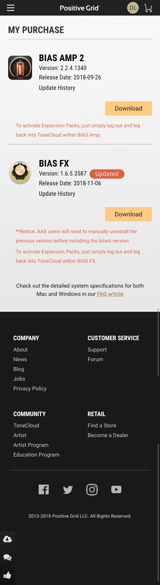 </div> --- ###### Work Experience @PG ### Layout work ##### Login Page: 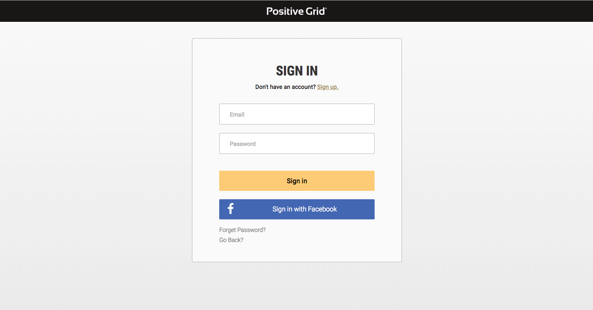 --- ###### Work Experience @PG ### Layout work ##### Find A Store / Store Page / Cart Mobile: <div style="display:inline-block;"> 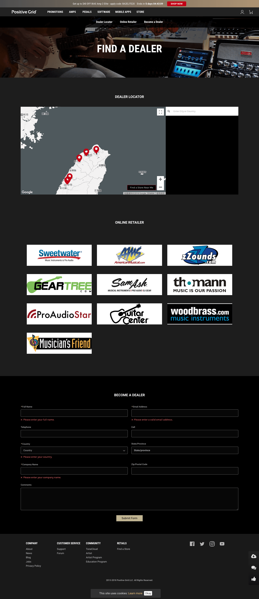 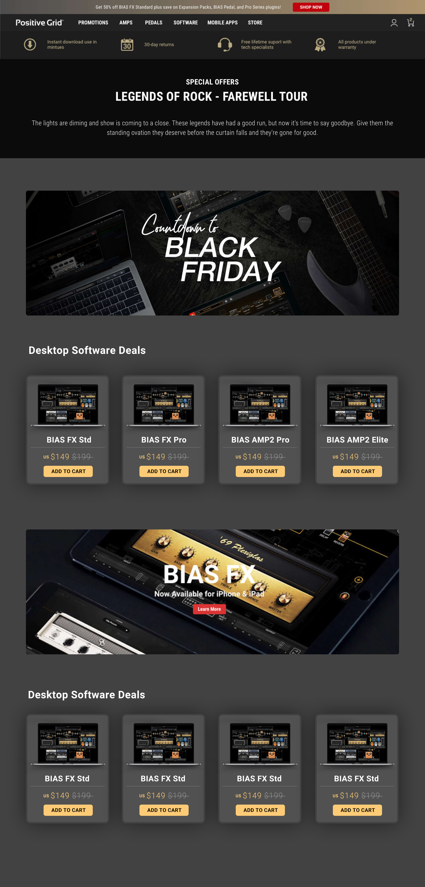 <div style="width:33%;vertical-align: top;display: inline-block;"> <!-- 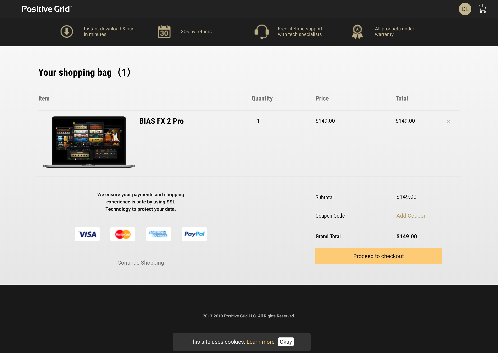 --> 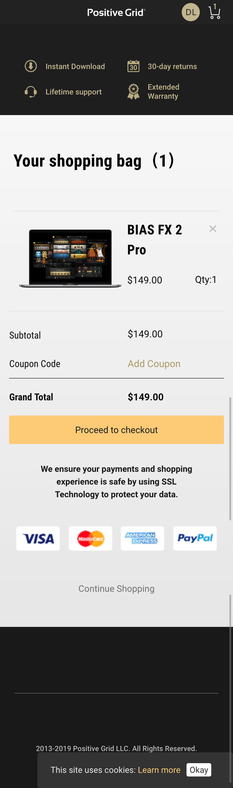 </div> </div> --- ###### Work Experience @PG ### Git Flow ##### Situation: <p style="font-size:1rem;margin-bottom:0;"> - Single feature should have their own developing branch. </p> <p style="font-size:1rem;margin-bottom:0;"> - Some features had been developed but not going live soon until the idea has been approved by marketing team member. </p> <p style="font-size:1rem;margin-bottom:0;"> - Website needs to be updated and deployed as fast as possible. </p> 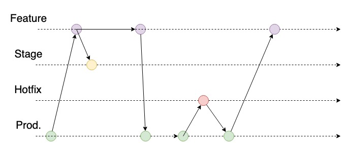 --- ###### Work Experience @PG ### Git Flow ##### Idea: <p style="margin-bottom:0;"> - First step is always checkouting a new branch from master. </p> <p style="margin-bottom:0;"> - Run `git rebase prod-branch` before merging feature branch into stage branch or prod. branch. </p> <p style="margin-bottom:0;"> - Don't directly merge stage branch into prod. branch. </p> <p style="margin-bottom:0;"> - You can treat stage branch as a pre-prod. branch, but one thing you should be noticed that not all features which has been merged into stage are becoming part of our official release. </p> --- ###### Work Experience @PG ### Bridged Page between APP and website: <p> In order to increase purchase, we had to find a way that our customers can access our web store easily inside app. </p> <video autoplay muted preload="auto" style="width:100%;"> <source type="video/mp4" src="./statics/img/PG/crm.mp4"> </video> --- ###### Work Experience @PG ### Product Card: <p> A code which is written in sub-pub pattern to match a maximum height value of individual product item in the same row. </p> <div style="display:inline-block;text-align: center;"> 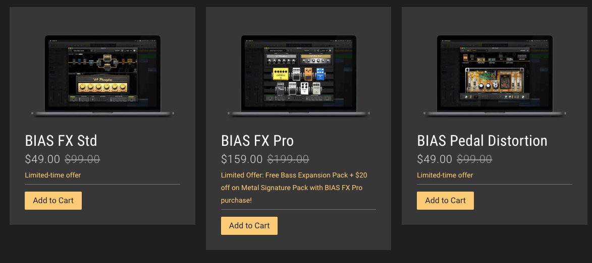 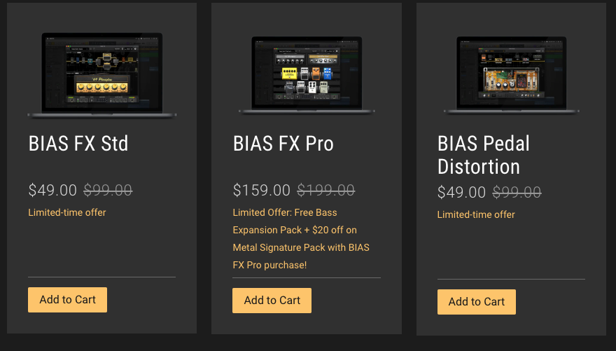 </div> --- ###### Work Experience @PG ### Promotion Bar ##### Dynamic render: <p>A marketing member can access BC's backstage and just edit some imperative texts and click save, then the promotion bar will be up-to-date without additional deployment. This is not an original feature in BC.</p> <div> 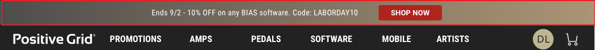 </div> --- ###### Work Experience @PG ### Price Dashboard <p>Marketing team needs a tool that can quickly read, set and update company's product price during every promotion era.</p> ##### Sketch this project: <div> 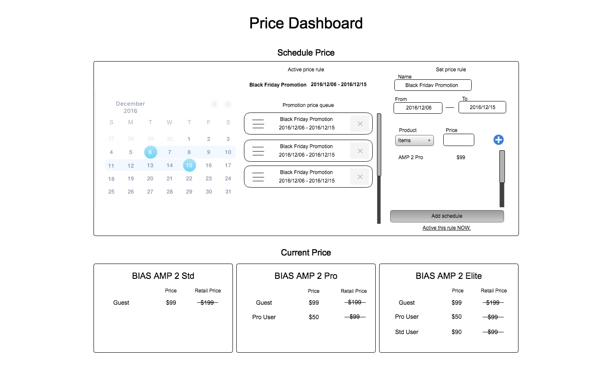 </div> --- ###### Price Dashboard [[source]](https://github.com/DanielLin9406/fullstack-priceDashboard) #### Preview: 1: <p>By the way, I also do the design job since it was an internal tool.</p> <div> 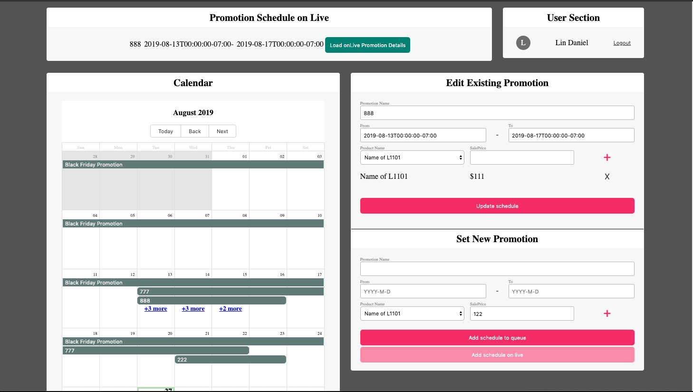 </div> --- ###### Price Dashboard [[source]](https://github.com/DanielLin9406/fullstack-priceDashboard) #### Preview: 2: <div> 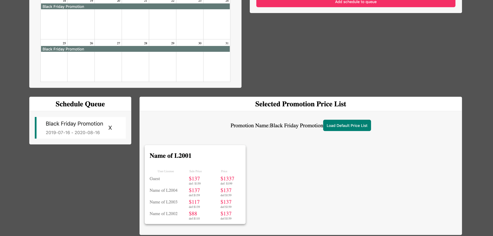 </div> --- ###### Price Dashboard [[source]](https://github.com/DanielLin9406/fullstack-priceDashboard) ### Features: <p style="margin-bottom:0;margin-bottom:0.2rem;"> - The state is always up-to-date with backend even when create/update/delete operation has been triggered. </p> <p style="margin-bottom:0;margin-bottom:0.2rem;"> - Allow user to auto sign in if browser has been permitted to store his/her password. </p> <p style="margin-bottom:0;margin-bottom:0.2rem;"> - Power visual for understanding which promotion is on live and what is next promotion. </p> <p style="margin-bottom:0;"> - You can easily calculate a product price for a user who could has any combination of company's early product before. </p> --- ###### Price Dashboard [[source]](https://github.com/DanielLin9406/fullstack-priceDashboard) #### Code Demo: Render Props <div> <img style="width:80%;" src="https://drive.google.com/uc?export=view&id=1_5QrTQ6GnqLLs4gBb8uh_8_T1qpzQRQd" alt="render_props_demo"> </div> --- ###### Price Dashboard [[source]](https://github.com/DanielLin9406/fullstack-priceDashboard) #### Demo: Auto sign in: <video autoplay muted preload="auto" style="width:100%;"> <source type="video/mp4" src="https://drive.google.com/uc?export=download&id=1MfJkwjx5fU85Ca_3hsb1aLgXJ1jSblzl"> </video> --- ###### Price Dashboard [[source]](https://github.com/DanielLin9406/fullstack-priceDashboard) #### Demo: Create a promotion: <video autoplay loop muted preload="auto" style="width:100%;"> <source type="video/mp4" src="https://drive.google.com/uc?export=download&id=1rYWyt-o05Cu7dpJtHIsawbZiKxeqB_4x"> </video> --- ###### Price Dashboard [[source]](https://github.com/DanielLin9406/fullstack-priceDashboard) ### Demo: Update a promotion: <video autoplay loop muted preload="auto" style="width:100%;"> <source type="video/mp4" src="https://drive.google.com/uc?export=download&id=1JHEo9ef-JNSqW_Yc42PI-1HwOlMVRtTF"> </video> --- ###### Price Dashboard [[source]](https://github.com/DanielLin9406/fullstack-priceDashboard) #### Demo: Remove a promotion: <video autoplay loop muted preload="auto" style="width:100%;"> <source type="video/mp4" src="https://drive.google.com/uc?export=download&id=1eCkpOXmtVa9SUODw_JKDzSzBzXZdMo2K"> </video> --- ###### Price Dashboard [[source]](https://github.com/DanielLin9406/fullstack-priceDashboard) ### Demo: Create a promotion and push it on live: <video autoplay loop muted preload="auto" style="width:100%;"> <source type="video/mp4" src="https://drive.google.com/uc?export=download&id=15AazG9LvzGTS2FS0mbPB_tVORzcktJyo"> </video> --- ###### Price Dashboard [[source]](https://github.com/DanielLin9406/fullstack-priceDashboard) #### Demo: Create a promotion and push it on live while there is another promotion on live: <video autoplay loop muted preload="auto" style="width:100%;"> <source type="video/mp4" src="https://drive.google.com/uc?export=download&id=1rYWyt-o05Cu7dpJtHIsawbZiKxeqB_4x"> </video> --- ###### Price Dashboard [[source]](https://github.com/DanielLin9406/fullstack-priceDashboard) #### Demo: Price updated when different products in bundles: <video autoplay loop muted preload="auto" style="width:100%;"> <source type="video/mp4" src="https://drive.google.com/uc?export=download&id=1ENl9Mo-NgGKwLdmYsHvCKuKq_UsvLn_k"> </video> --- ###### Price Dashboard [[source]](https://github.com/DanielLin9406/fullstack-priceDashboard) #### Front End (Web service): - Structure: <p style="margin-top:0;margin-bottom:0.2rem;"> - Take advantage of the power of Webpack for packaging web service in dev and prod. environment instead of directly using CRA. </p> <p style="margin-top:0;margin-bottom:0.2rem;"> - React-Redux best practice (e.g. layout, route and page as component for more flexibility.) </p> <p style="margin-top:0;"> - Separate Redux's mapStateToProps and mapDispatchToProps from every component in order to make it easy to understand. </p> - Design pattern: <p style="margin-top:0;margin-bottom:0.2rem;"> - Implement React's design pattern such as compound, render-props and context api to build reuseable and clear component. </p> <p style="margin-top:0;"> - Use module pattern for Redux. </p> - API: <p style="margin-top:0;margin-bottom:0.2rem;"> - Auto sign in with Credential Management API. </p> <p style="margin-top:0;"> - Encapsulate axios </p> - Server: <p style="margin-top:0;margin-bottom:0.2rem;"> - Use nginx as static file server in production environment. </p> <p style="margin-top:0;"> - JSON-server for serving a mock data. </p> --- ###### Price Dashboard [[source]](https://github.com/DanielLin9406/fullstack-priceDashboard) #### Back End (User / Promotions / Prices / Upgrade-rules Services): - Auth: <p style="margin-top:0;"> - Google OAuth 2.0 </p> - Structure: <p style="margin-top:0;margin-bottom:0.2rem;"> - Best practice of Node/Express with ES6 syntax(e.g. self-contained components as file structure, bind API at router level). </p> <p style="margin-top:0;"> - Every route has implemented Redis as cache server to reduce DB's query operation. </p> - Cache: <p style="margin-top:0;"> - Thanks to Redis, no extra DB query command is executed when post/update/delete router has been called and still can return a full list of promotion. </p> - Proxy: <p style="margin-top:0;"> - Use NGINX as a reverse proxy. </p> --- ###### Price Dashboard [[source]](https://github.com/DanielLin9406/fullstack-priceDashboard) #### DevOps: - Container <p style="margin-top:0;margin-bottom:0.2rem;"> - Use Docker-compose to run dev on local </p> <p style="margin-top:0;margin-bottom:0.2rem;"> - Multi-container structure </p> <p style="margin-top:0;margin-bottom:0.2rem;"> - Use $(git rev-parse HEAD) to tag container in order to track version. </p> <p style="margin-top:0;"> - K8S </p> - CI: <p style="margin-top:0;"> - Travis </p> - Cloud: <p style="margin-top:0;margin-bottom:0.2rem;"> - AWS ECS </p> <p style="margin-top:0;"> - GCP GKE </p> --- ###### Price Dashboard [[source]](https://github.com/DanielLin9406/fullstack-priceDashboard) ### Developing Process #### Step 1: Understand Business Requirement --- ###### Price Dashboard [[source]](https://github.com/DanielLin9406/fullstack-priceDashboard) ### Developing Process #### Step 2: Build UI - Present at least twice your sketch and features to team leader in order to prevent misunderstandings: <div> </div> --- ###### Price Dashboard [[source]](https://github.com/DanielLin9406/fullstack-priceDashboard) ### Developing Process #### Step 2: Build Data Structure: - According to sketch, build a redux data structure <div> 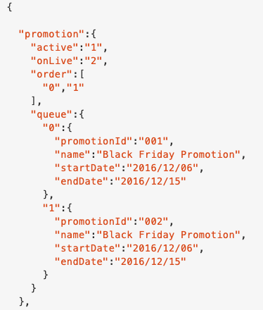 <img style="width:30%;vertical-align: top;" src="./statics/img/Price-Dashboard/redux-structure-1.png" alt="redux-structure-1"> </div> --- ###### Price Dashboard [[source]](https://github.com/DanielLin9406/fullstack-priceDashboard) ### Developing Process #### Step 2: Planning Sequence Diagrams <p style="font-size: 1rem;"> - Check existing API and define new API spec. </p> <p style="font-size: 1rem;"> - Define a API response's data structure. </p> <p style="font-size: 1rem;"> - Deal with Authorization. </p> <div> 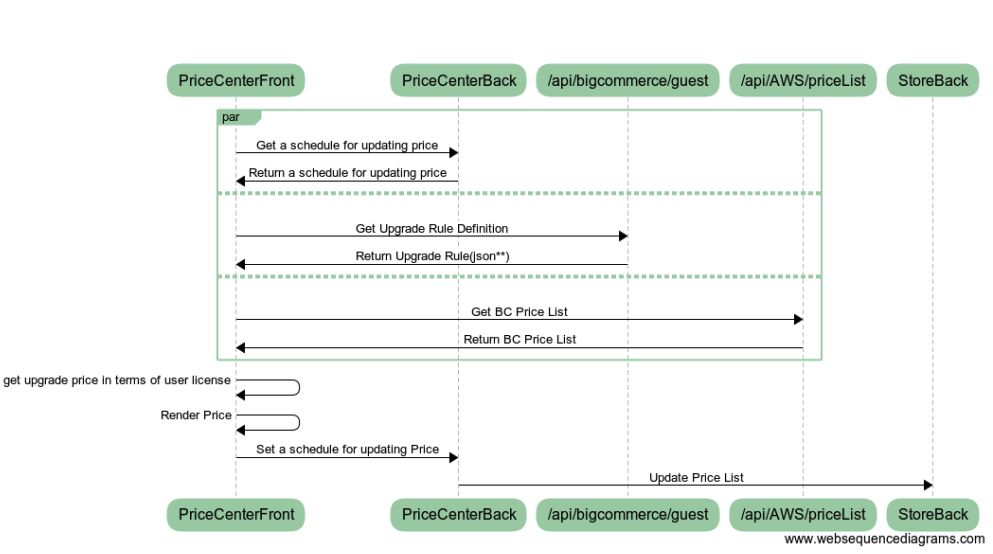 </div> --- ###### Price Dashboard [[source]](https://github.com/DanielLin9406/fullstack-priceDashboard) ### Developing Process #### Step 3: Implement entry point: - Back-end API <p style="margin-top:0;margin-bottom:0.2rem;"> -> database </p> <p style="margin-top:0;margin-bottom:0.2rem;"> -> front-end </p> <br /> - Front-end with mock data server --- ###### Price Dashboard [[source]](https://github.com/DanielLin9406/fullstack-priceDashboard) ### Developing Process #### Step 3: Develop back end API: Although complexity of individual API may be different from case to case, I take an API as unit. <p style="margin-top:0;margin-bottom:0.2rem;"> - Build API router based on sequence diagram (Write schema and resolve to create graphql-server) </p> <p style="margin-top:0"> - Build a mock data and return response. </p> <p style="margin-top:0"> - Integrate 3rd API if needed. </p> --- ###### Price Dashboard [[source]](https://github.com/DanielLin9406/fullstack-priceDashboard) ### Developing Process #### Step 3: Connect backEnd API to DB: <p> - Setup DB </p> <p style="margin-top:0"> - Connect to dev/prod DB </p> <p style="margin-top:0"> - Build model classes </p> <p style="margin-top:0"> - Write seed data into DB </p> <p style="margin-top:0"> - Access data @API level and replace mock data </p> <p style="margin-top:0"> - Run unit test to api </p> --- ###### Price Dashboard [[source]](https://github.com/DanielLin9406/fullstack-priceDashboard) ### Developing Process #### Step 3: Develop front end data model <p> - Build Webpack </p> <p style="margin-top:0"> - Build Redux Store to host state </p> <p style="margin-top:0"> - Build Reducer and Set initial state </p> <p style="margin-top:0"> - Build Action and connect to backend API(or Mock data) </p> <p style="margin-top:0"> - Display data in component </p> --- ###### Price Dashboard [[source]](https://github.com/DanielLin9406/fullstack-priceDashboard) ### Developing Process #### Step 3: Develop front end UI from the bottom up <p> - Build unit component Button, Progress </p> <p style="margin-top:0"> - Define Props Parameter </p> <p style="margin-top:0"> - Decide where to call redux dispatch function </p> <p style="margin-top:0"> - Based on design pattern to write component </p> <p style="margin-top:0"> - Build a functional component </p> <p style="margin-top:0"> - Start to build state inside component </p> <p style="margin-top:0"> - Run unit test </p> --- ###### Price Dashboard [[source]](https://github.com/DanielLin9406/fullstack-priceDashboard) ### Developing Process #### Step 3: Dockerize your application <p> - Build dockerfile in dev and prod </p> <p style="margin-top:0"> - Build docker-compose in dev and prod </p> --- ###### Price Dashboard [[source]](https://github.com/DanielLin9406/fullstack-priceDashboard) ### Developing Process #### Step 4: Functional Test Phase <p> - E.g. test login, test post article </p> --- ###### Price Dashboard [[source]](https://github.com/DanielLin9406/fullstack-priceDashboard) ### Developing Process #### Step 5: Deployment Phase <p> - Set up CI tools </p> <p> - Run Integration Test </p> --- ###### Price Dashboard [[source]](https://github.com/DanielLin9406/fullstack-priceDashboard) ### Problem Solved ##### Communication is important but hard to be done well. ##### Tools <p style="margin-bottom:0.2rem;"> - API Doc </p> <p style="margin-top:0"> - Screen shot of chrome dev tools </p> ##### Priority order --- ###### Lazy Stock Screener [[source]](https://github.com/lazy-stock-screener-demo/customer-web) #### Structure: MVP pattern <a href="https://khalilstemmler.com/articles/client-side-architecture/introduction/">Client-Side Architecture by Khalil Stemmler</a> <div> <img style="width:80%;" src="https://drive.google.com/uc?export=view&id=1Jexsxyet-Sr8iRHcqt58ViTUPC7wfyNa" alt="MVP_pattern"> </div> --- ###### Lazy Stock Screener [[source]](https://github.com/lazy-stock-screener-demo/customer-web) #### Structure: Model <div> <img style="width:80%;" src="https://drive.google.com/uc?export=view&id=10HYyu8pSwc3amz1OvJOMnjtKxBODcaW3" alt="Model in MVP"> </div> --- ###### Lazy Stock Screener [[source]](https://github.com/lazy-stock-screener-demo/customer-web) #### Structure: Presenter <div> <img style="width:80%;" src="https://drive.google.com/uc?export=view&id=1vA52sMDTYEIzo3GMtf4597t5aLibVUDt" alt="Presenter in MVP"> </div> --- ###### Lazy Stock Screener [[source]](https://github.com/lazy-stock-screener-demo/customer-web) #### Structure: View <div> <img style="width:80%;" src="https://drive.google.com/uc?export=view&id=1qJJnyPAqL62bLiV9kIm-K11yfzm3M6LH" alt="View in MVP"> </div> --- ###### Lazy Stock Screener [[source]](https://github.com/lazy-stock-screener-demo/customer-web) #### Structure: Page <div> <img style="width:80%;" src="https://drive.google.com/uc?export=view&id=17fO-tt0JsU4_5ofXr02P2-RzMWZdkll6" alt="Page in MVP"> </div> --- ###### Lazy Stock Screener [[source]](https://github.com/lazy-stock-screener-demo/customer-web) #### Code Example: API Facade - Encapsulate actions <div> <img style="width:90%;" src="https://drive.google.com/uc?export=view&id=13Om8Sny0cZBDN_yk0ONIcRt-S7XurdK8" alt="API Facade"> </div> --- ###### Lazy Stock Screener [[source]](https://github.com/lazy-stock-screener-demo/customer-web) #### Code Example: HOC - Combine global state, actions and loading UI as HOC <div> <img style="width:90%;" src="https://drive.google.com/uc?export=view&id=1ixHLCJayoSR0pJs11LME40FtfHqMg4Nm" alt="HOC Demo"> </div> --- ###### Revised Email Sender [[source]](https://github.com/DanielLin9406/fullstack-emailSender-upgraded) ### Role: Upgraded version of a email promotion and monitor system based on Stephergrinder's email sender. [Email Sender by Stepher Grinder](https://github.com/StephenGrider/FullstackReactCode) <div> 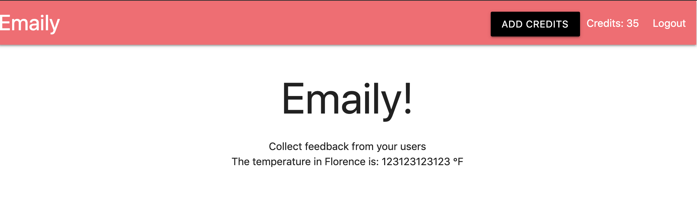 </div> --- ###### Revised Email Sender [[source]](https://github.com/DanielLin9406/fullstack-emailSender-upgraded) ### Refractor Front-End: | | Original | Revised | |-----------------------------|--------------------|--------------------| | Scaffold | Create React APP | My own Webpack | | Redux pattern | Reducer Pattern | Module Pattern | | New React feature | X | Hooks | | Websocket | X | socket.io | | Webpack dev/prod | X | yes | | Sign out | Page Reload | Ajax | | Dev. server | webpack-dev-server | webpack-dev-server | | Static file server in prod. | X | Express | --- ###### Revised Email Sender [[source]](https://github.com/DanielLin9406/fullstack-emailSender-upgraded) ### Refractor Back-End: | | Original | Revised | |-----------------------------|--------------------|--------------------| | Node syntax | Common.js | import | | Separate ‘server’ and ‘app’ module | X | yes | | Router attaching level | App level | Router level | | Structure | Technical role | Self-contained components | | Graphql server | X | Both apollo-server and graphqlExpress | | Mocha + Chi Testing | Restful API | GraphQL API | | Websocket | X | socket.io | | API + Connection type | Restful | Restful+Graphql+Websocket | --- ###### Revised Email Sender [[source]](https://github.com/DanielLin9406/fullstack-emailSender-upgraded) ### Dev-Ops and CI: | | Original | Revised | |----------------------|--------------------|--------------------| | Container | X | Docker, docker-compose | | CI/CD | heroku | travis | | Nginx | X | As reverse-proxy | --- ###### Personal Website [[source]](https://github.com/DanielLin9406/frontend-mixDanStudio) ### Introduction: Refractor my first website with modern packing tool, webpack. <div> 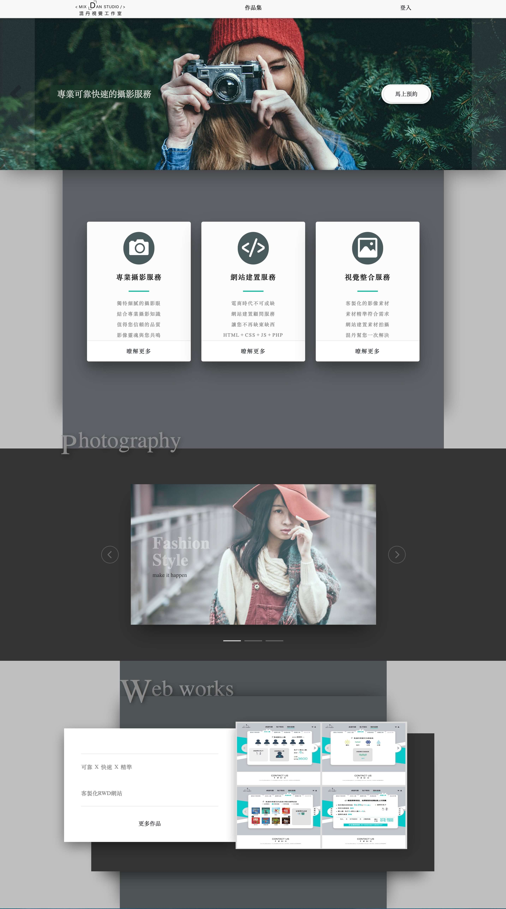 </div> --- ###### Personal Website [[source]](https://github.com/DanielLin9406/frontend-mixDanStudio) ### Front-End ##### Multi-pug template: 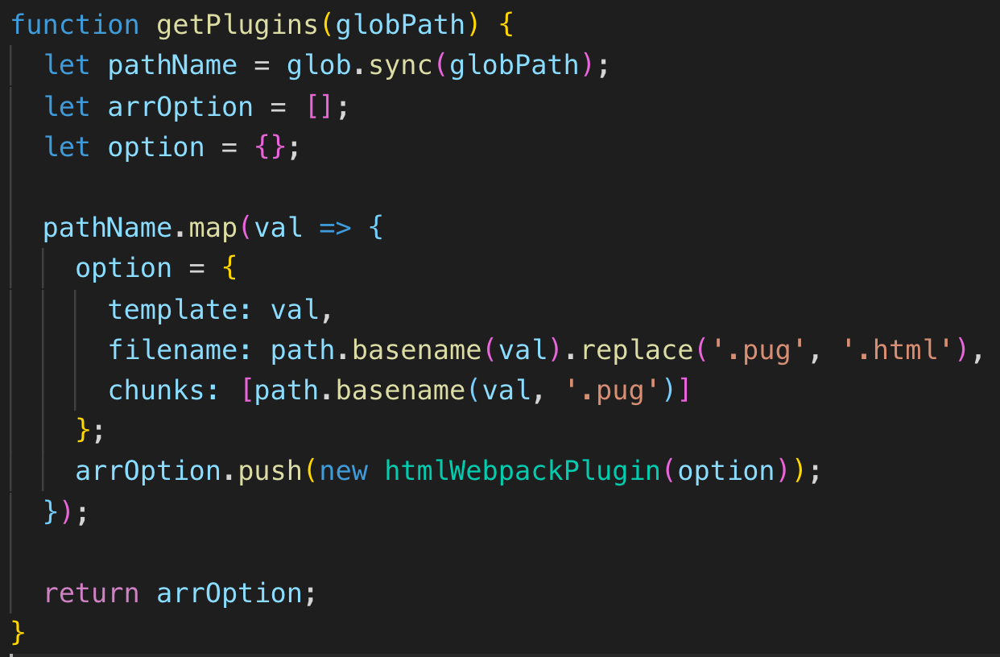 --- ###### Personal Website [[source]](https://github.com/DanielLin9406/frontend-mixDanStudio) ### Front-End ##### Webpack dynamic import: 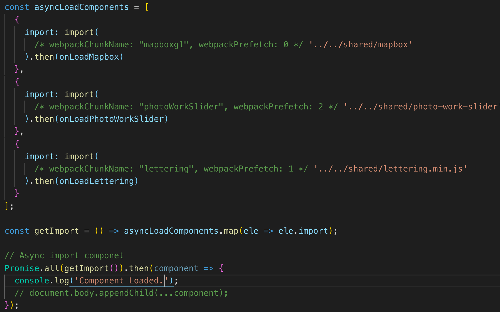 --- ###### Personal Website [[source]](https://github.com/DanielLin9406/frontend-mixDanStudio) ### Front-End ##### Webpack plugin: <div style="text-align: center;"> 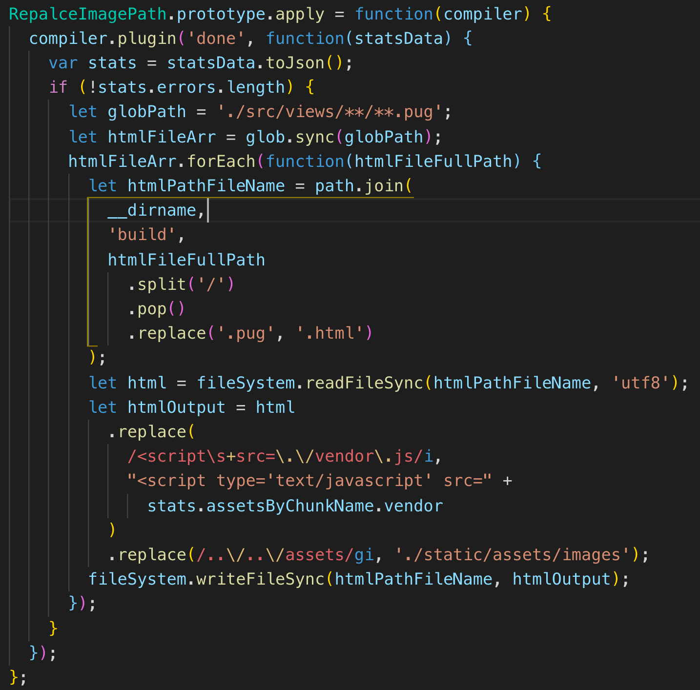 </div> --- ###### Personal Website [[source]](https://github.com/DanielLin9406/frontend-mixDanStudio) ### Front-End <span style="font-size:1rem;">Please ignore a awful color which is way much deviated from the original one.</span> ##### Layout and animations: <video autoplay muted preload="auto" style="width:100%;"> <source type="video/mp4" src="./statics/img/Persional-Website/layout-animations.mp4"> Your browser does not support the video tag. </video> --- ###### Personal Website [[source]](https://github.com/DanielLin9406/frontend-mixDanStudio) ### Back-End Use API keys and OAuth2.0 to authorized user. ##### Google Spread Sheet API: <video autoplay muted preload="auto" style="width:100%;"> <source type="video/mp4" src="./statics/img/Persional-Website/google-spread-sheet-api.mp4"> Your browser does not support the video tag. </video> --- ###### Crawler [[source]](https://github.com/DanielLin9406/crawler-python-voicetube) ### Introduction A simple python crawler transfer a given HTML file into a .csv file. ##### From web html -> Excel: <div> 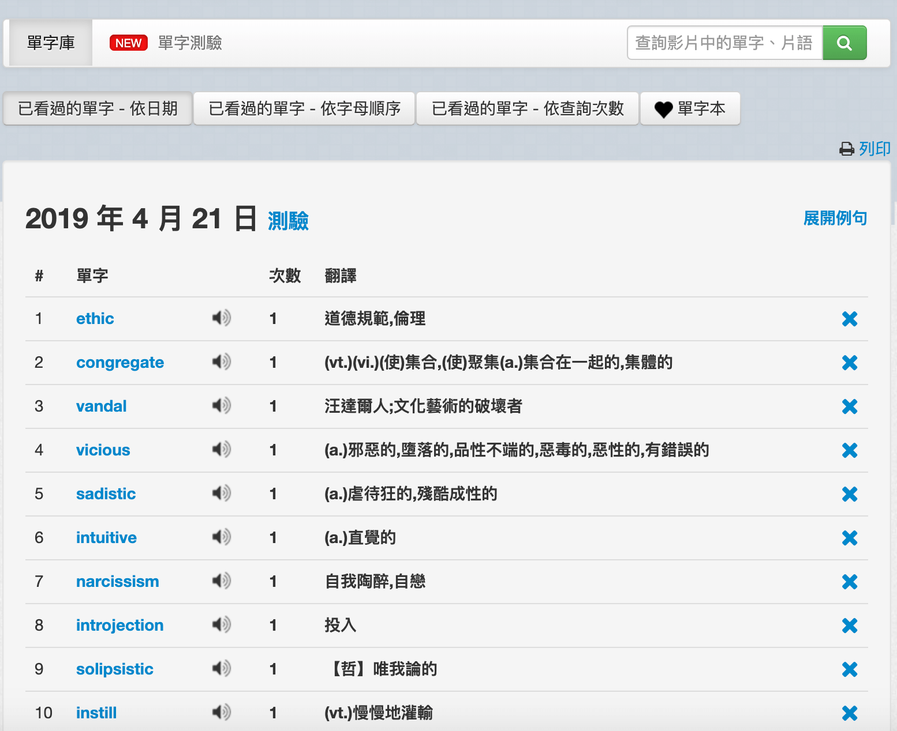 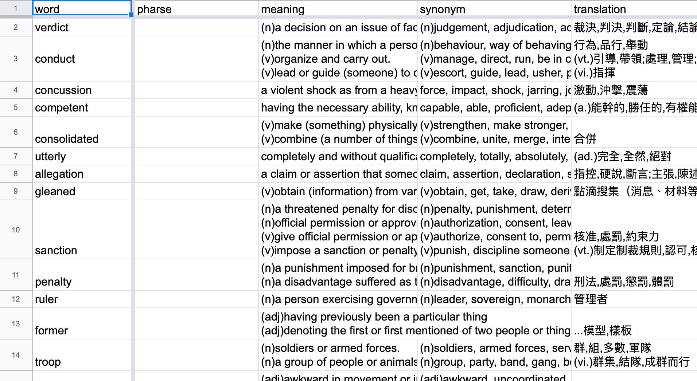 </div> <br/> ##### Tech Details: <p style="margin-top:0;;margin-bottom:0.2rem;"> - Python 3 </p> <p style="margin-top:0;;margin-bottom:0.2rem;"> - Requests </p> <p style="margin-top:0;;margin-bottom:0.2rem;"> - BS4 </p> <p style="margin-top:0;"> - csv </p> --- ###### Crawler [[source]](https://github.com/DanielLin9406/crawler-python-voicetube) ### Refractor python code to a well-organized structure: <div> 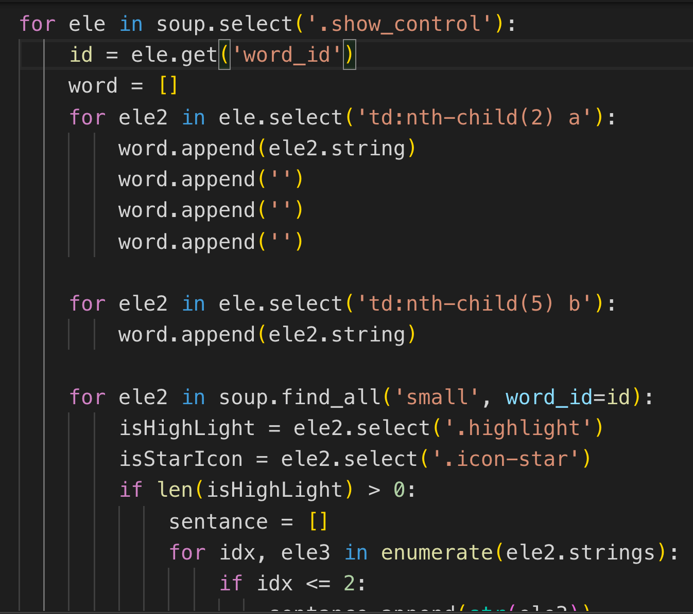 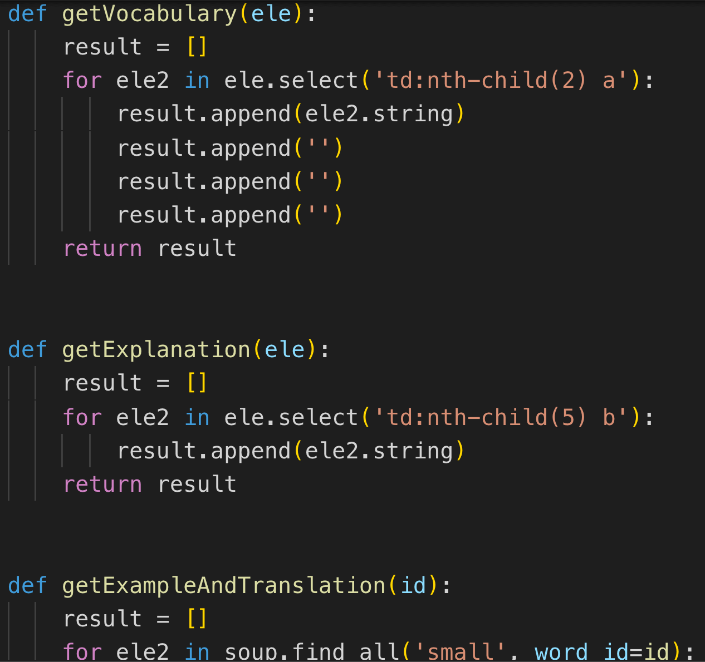 </div> --- <div style="display: flex;justify-content: center;align-items: center;height: 100%;"> <h2 style="text-align: center;">Thank you!!!!!!</h2> </div>